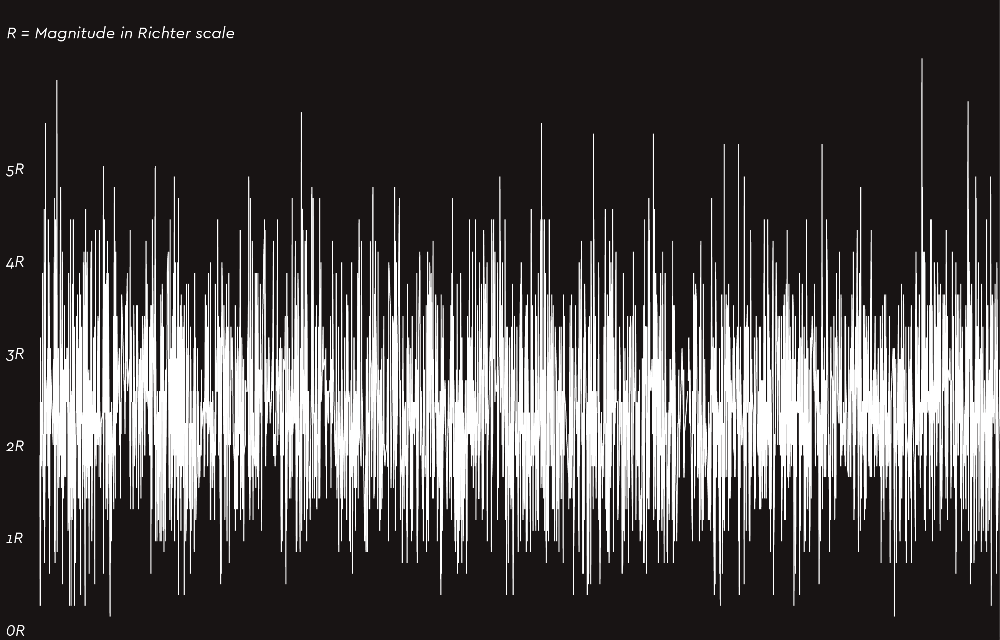
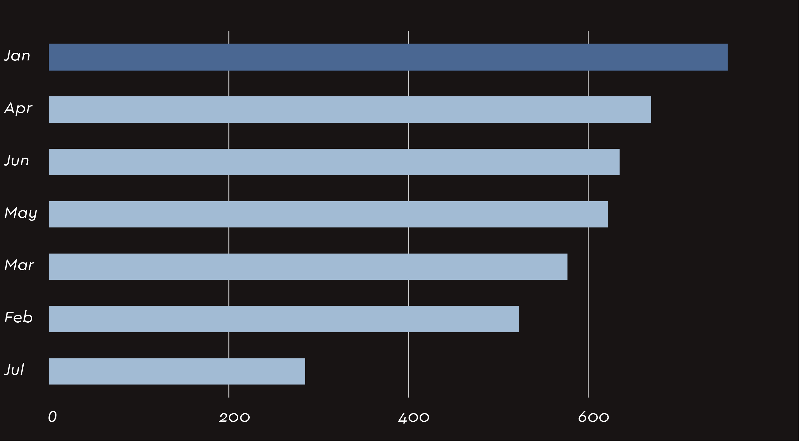
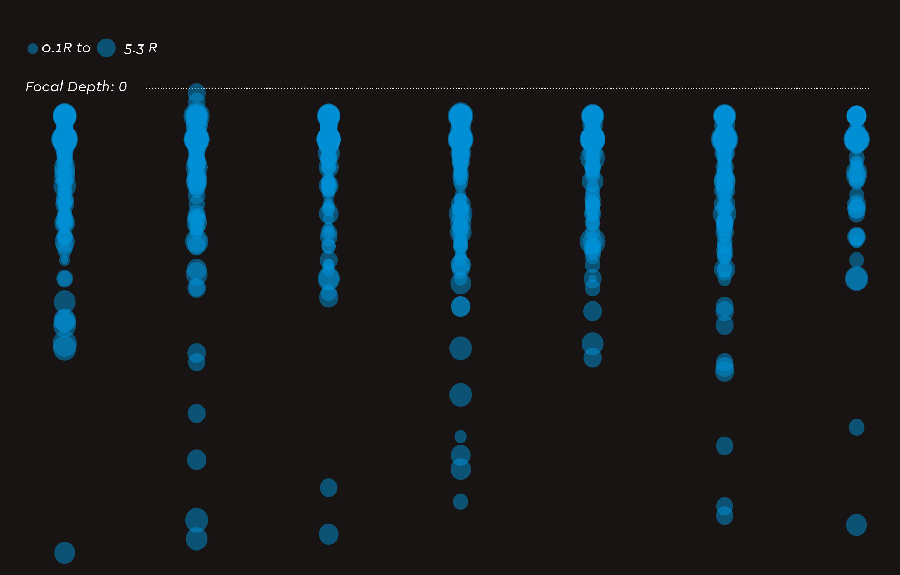
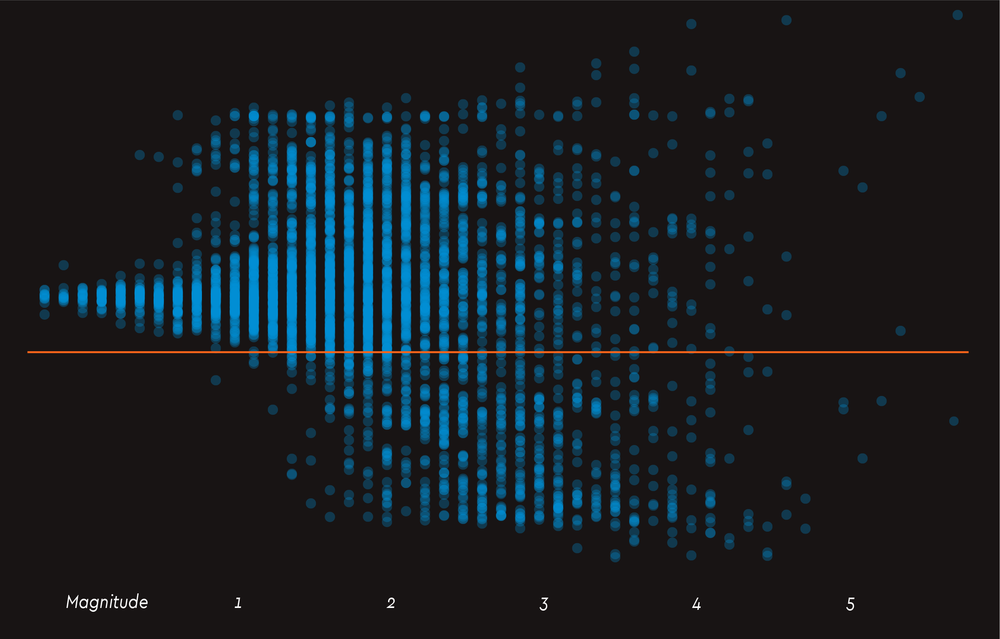
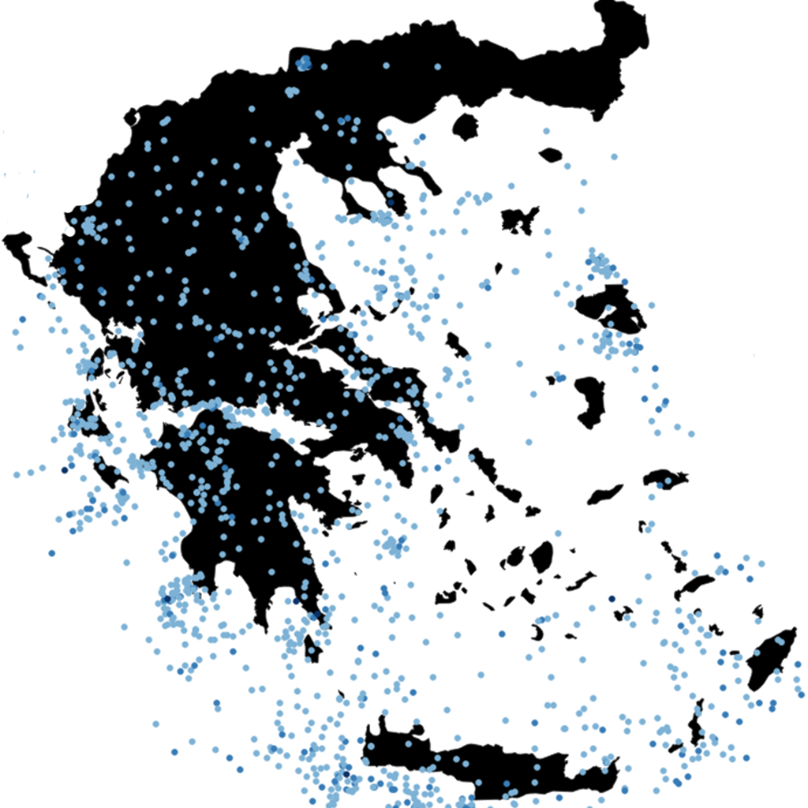

All 2018 earthquakes in Greece up until today
Greece along with Italy and Turkey sits on the meeting point of the African and Eurasian tectonic plates. This means that as of today there have been more than 4,065 earthquakes in the country. Fortunately, most Greek earthquakes are relatively mild but there is always the potential for more severe seismic activity, as the 1999 Athens earthquake, which had a magnitude of 6 and killed 143 people.
The data
The Geophysics Dept. of the University of Athens, Greece publishes real-time geographical, chronological and measuring data from 01.01.2018 until today. Let's try to plot this data.
So exactly, how seismically active is Greece?
This is what 4,065 earthquakes in 200 days looks like.
SOURCE: Geophysics Dept. of the University of Athens, Greece
Which was the most active month?
A glance at global geologic statistics might lead one to believe March is earthquake month. As far as Greece is concerned, January seems to have been the most 'shaky' one for 2018.
SOURCE: Geophysics Dept. of the University of Athens, Greece
Did you feel that?
Lower focal depth, means closer to the Earth's surface and of course more effects, even if the magnitude is low. Let's plot focal depth and magnitude.
NOTE: For visibility matters, all earthquakes have been plotted per month [January to July].
SOURCE: Geophysics Dept. of the University of Athens, Greece
North vs. South
69% of this year’s earthquakes happened at, or above Athens latitude, which is not in the center of the country, but it is rather used as a reference point. Nevertheless, the Southern part of Greece seems to have experienced more intense earthquakes this year. This graphic shows all earthquakes plotted on latitude and magnitude.

SOURCE: Geophysics Dept. of the University of Athens, Greece
2018: Earthquakes above 2.7R in Greece, so far.
Rather than plotting, let's see where the most significant earthquakes have taken place.

SOURCE: Geophysics Dept. of the University of Athens, Greece - Shapefiles by Natural Earth